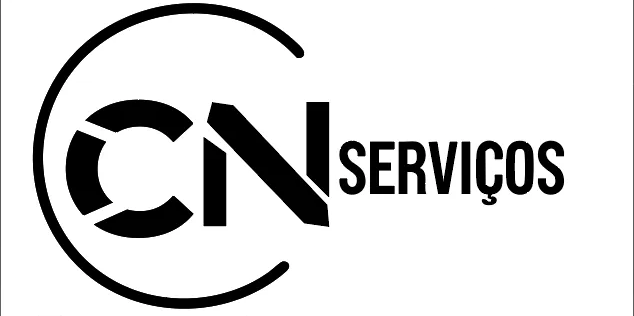

Identidade visual
Criação de marca, direção visual, cores, tipografia e aplicações essenciais.
Portfolio individual
Crio identidades visuais estratégicas para empresas que desejam crescer, se posicionar e vender mais.
Atuo com identidade visual, design gráfico, social media e marketing, unindo estética e estratégia para criar materiais consistentes. Meu foco é ajudar negócios, profissionais e instituições a se apresentarem com mais segurança e personalidade.
Confira alguns dos meus trabalhos:
Design jurídico · Social media · Marketing

Identidade visual · Design gráfico · Marketing

Identidade visual · Design gráfico · Marketing

Design gráfico · Social media

Design gráfico · Social media

Identidade visual · Marketing · Design gráfico

Identidade visual · Design gráfico · Marketing
Criação de marca, direção visual, cores, tipografia e aplicações essenciais.
Peças impressas e digitais para campanhas, apresentações, eventos e vendas.
Artes, templates e sistemas visuais para conteúdo recorrente nas redes.
Comunicação visual orientada a posicionamento, lançamento e relacionamento.
Páginas digitais para apresentar sua marca, captar contatos e transformar visitas em oportunidades.
Fale comigo pelo WhatsApp ou envie um e-mail contando o que você precisa criar, renovar ou divulgar.